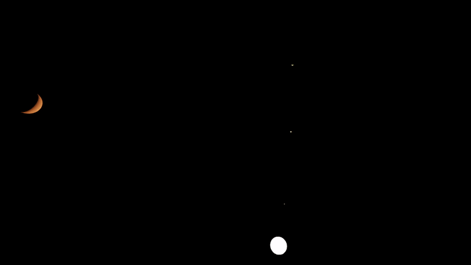
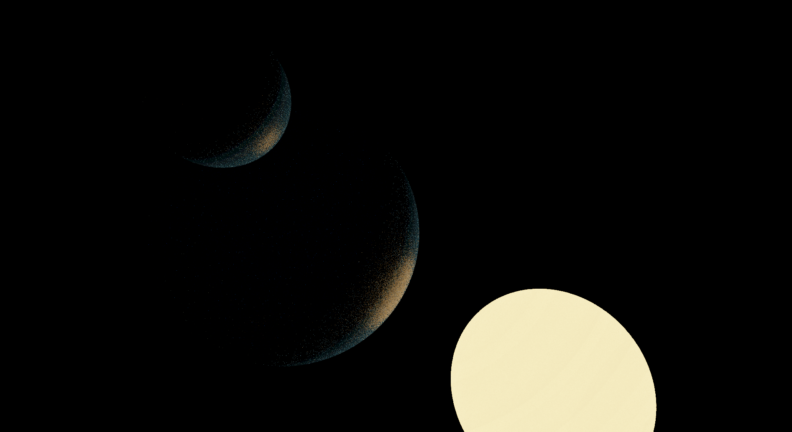

Fun Fact
Rather than use an existing windowing library, the project hooks directly into the Windows API to create its window and manage user inputs.
Overview
I had an interest in trying my hand at GPU coding, in particular rendering via ray tracing, for a considerable amount of time. Inspired by Sebastian Lague's various projects, I decided to use my newly acquired understanding of C++ to build my own ray traced renderer from scratch. To create an environment to render, I chose to also expand my previous C# and Unity-based experiments with celestial simulations into a 3D simulation written fully in C++. After considering various graphics API options, including OpenGL, I eventually landed on using Vulkan for its modernity, prevalence in 3D graphics, and performance. Celestial-Rays is also my first 3D project and has been an invaluable learning experience when it comes to working in the third dimension.


Celestial-Rays is designed around an explicit division between physics simulation and graphics rendering. The physical simulation runs on the CPU in C++, automatically transitioning to multithreaded physics steps when sufficient celestial bodies are present. On the other side, rendering is handled using a custom GLSL compute shader implementing ray tracing functionality. All simulation state data required by the shader is converted to an explicitly GLSL-compatible format prior to being passed to the rendering pipeline. To gain more experience with low-level code and resource management in C++, I also chose not to use any existing Vulkan framework and instead implement the entire initialization and frame-rendering mechanism from scratch, becoming far more familiar with concepts such as RAII (Resource Acquisition Is Initialization) in the process. The simulation also features a custom material system allowing celestial bodies to have various reflective, absorptive, and emissive properties.
Fun Fact
The physical and visual sizes of all objects in the simulation can be set independently, enabling physically accurate systems to be rendered with greater visibility.